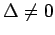
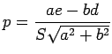

Inhalt Index DeskTop Bronstein

 Geometrie Vektoralgebra und analytische Geometrie Analytische Geometrie der Ebene Kurven 2. Ordnung (Kegelschnitte)
Geometrie Vektoralgebra und analytische Geometrie Analytische Geometrie der Ebene Kurven 2. Ordnung (Kegelschnitte)


| Größen |
Gestalt der Kurve | |
| Parabolische Kurven*1 |
 | Parabel |
| Geradenpaar Parallele Geraden für d2-af>0 Doppelgerade für d2-af =0 Imaginäre Gerade für d2-af<0 |
||
| Notwendige Koordinatentransformation | Normalform der Gleichung nach Transformation |
| 1. Verschiebung des Koordinatenursprungs in den Scheitel der Parabel, dessen Koordinaten x0 und y0 durch die Gleichungen und definiert werden. 2. Drehung der Koordinatenachsen um den Winkel das Vorzeichen von von a entgegengesetzt sein. |
y'2=2px'  |
| Drehung der Koordinatenachsen um den Winkel das Vorzeichen von von a entgegengesetzt sein. |
ist auf die Form transformierbar. |
Im Falle wird vorausgesetzt, daß keiner der Koeffizienten a, b, c verschwindet.
 Der Kurvengleichung entspricht eine imaginäre Kurve.
Der Kurvengleichung entspricht eine imaginäre Kurve.
Hinweis: Sind zwei Koeffizienten (a und b oder b und so reduzieren sich die notwendigen Koordinatentransformationen auf eine Verschiebung der Koordinatenachsen.
Die Gleichung cy2+2dx+2ey+f = 0 erhält die Form
die Gleichung ax2+2dx+2ey+f=0 erhält die Form